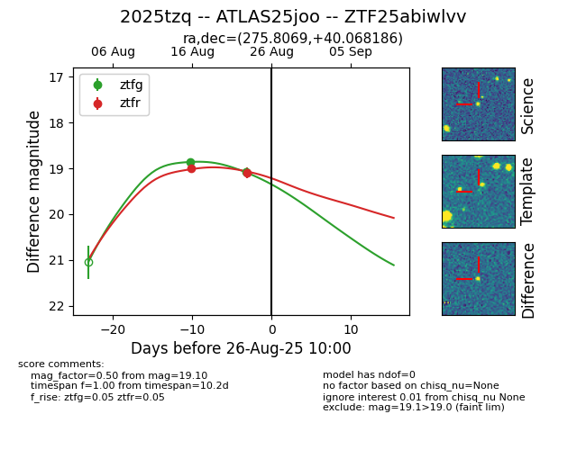

Target 2025tzq at 2025-08-26 11:45, see:
FINK: fink-portal.org/ZTF25abiwlvv
Lasair: lasair-ztf.lsst.ac.uk/objects/ZTF25abiwlvv
ALeRCE: alerce.online/object/ZTF25abiwlvv
TNS: wis-tns.org/object/2025tzq
YSE: ziggy.ucolick.org/yse/transient_detail/2025tzq
alt names
ZTF25abiwlvv (ztf,fink)
2025tzq (tns,yse)
ATLAS25joo (atlas)
coordinates:
equatorial (ra, dec) = (275.8069,+40.06819)
galactic (l, b) = (67.8427,+22.15666)
photometry
last atlaso=19.21, ztfg=19.08, ztfr=19.10
3 atlaso, 2 ztfg, 2 ztfr detections
